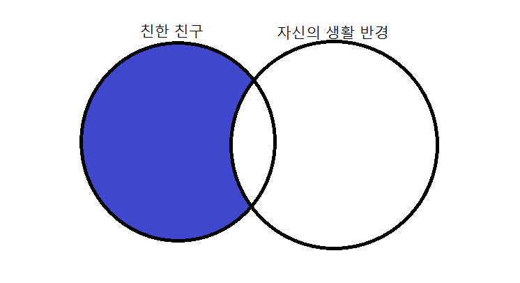

Friendi는 가장 가까운 친구들, 그러나 자주보기 어려운 친구들을 관리해주는 어플리케이션 입니다.
우리는 살아가면서 여러 사람들을 만나고, 소중한 인연을 맺게 됩니다.
하지만 시간이 흐르면서 인연을 맺었던 사람들과 여러 이유로 멀어지게 되곤 합니다.
새로운 학교를 가고, 새로운 직장을 가면서...
떨어져 지내는 자신의 가장 친한 친구들과 연락한지, 만난지 얼마나 되었는지 알고 계시나요?
Friendi는 그러한 문제의식에서 출발합니다.

Friendi는 자주 만나기 힘든 친한 친구들과 좋은 관계를 유지하고 싶어하는 사람들의 needs에서 출발합니다.
자신의 친구 관계를 수평적, 수직적 으로 비교해서 보여줍니다.
수평적이라고 하면 자신과 비슷한 생활 패턴 혹은 라이프 스타일의 사람이 어떻게 교우관계를 맺고 있는지(즉, 다른 사람들이 어떻게 하고 있는지에 대한 평균값)를 통해 자신의 교우관계를 점검하게 하고,
수직적이라고 하면 자신의 교우관계 패턴이 시계열적으로 어떻게 변화해왔는지, 혹은 특정인과의 연락빈도 등이 어떤지 보여줍니다. (자신의 스타일을 보여주고, 특정인과의 관계가 가까워지는지 소홀해졌는지를 보여줍니다.)
분석 알고리즘은 정성적/정량적인 연락 패턴을 정량적인것으로 환산하려고 합니다.
정성적인 것에 대해서는 텍스트앳(썸/연애관계에서 감정분석) 과 같이 그 사람과의 관계/대화패턴 에 따라 분석해주는 방식이 있으나, 이는 다소 불편하고 귀찮은 점이 있다고 생각이 들어서 다른 대안이 필요할 것 같고.
정량적인 것은 연락의 양(전화 시간/ 카톡 대화량) 우선으로 간략화할 필요가 있을 것 같습니다.
번거롭고 정확한 측정 방식보다는 간편하고 rough 한 측정 방식을 사용하려고 합니다. (친밀도를 크게 3단계정도로 구분해준다던지)
다음은 등록 기능을 추가 할 예정입니다. 등록 기능이란, 그 친구와 만나야겠다 or 연락해야겠다는 기한을 설정하는 것입니다.
기한 설정이 중요하다고 생각합니다. 예를 들어, A라는 친구를 누르고 1달안에 연락하기/만나기, 3달안에 연락하기/만나기 등을 등록해서
알림(1달인 경우 1주마다/3달인 경우 3주마다) 을 받을 수 있게 할 예정입니다.
due date를 설정해놓고, 그 기간이 지나면 연기할 수 있게 하면서 지속적으로 알림을 받을 수 있습니다.
그리고 가장 만나고 싶은 친구 기능을 통해 꼭 만나고 싶은 사람들을 관리하는 기능도 추가하면 도움 될 것 같습니다.
Friendi는 자신의 친구관계를 관리하는데 어려움을 겪는 바쁜 20대 대학생 및 직장인을 타겟으로 합니다.